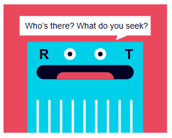

Build A The Web
Introduction
This is Build A The Web, a book devoted to taking you, a person with basic programming and computer knowledge, and upgrading you into a web programmer.
This book, including all code samples, images, and attached content are available for free, under the terms of the GNU Affero General Public License v3.0 , except for the fonts, which are available under the Open Font License .
GPLv3
While Richard Stallman is a bit of a dogmatic screwball, the man's seemingly able to predict the future with an accuracy we would normally associate with prophets, actuaries, or Google.
This site, and all of the resources used to generate this site, including class materials and examples, are available at https://github.com/classam/buildatheweb.
Chapter 1: Request, Response
Our first chapter is going to focus on what happens behind the scenes when we make a web request. What that means is a crash course in computer networking.
Uniform Resource Locators
Let's start by looking at what happens when we crack open a web browser and type in:
https://en.wikipedia.org/w/index.php?title=Blinkenlights&action=edit#Etymology
This is a URL, which stands for Uniform Resource Locator.
URI
Some people might also call this an URI, but if we encounter a person who does this, I recommend that we shun then socially until they stop.
This URL uniquely identifies a document somewhere on someone else's computer that we are going to request from that computer.
This divides into protocol, domain name, path, parameters, fragment, locus, and spindle. Memorize all of these terms now.
Dissecting a URL
Protocol
https://en.wikipedia.org/w/index.php?title=Blinkenlights&action=edit#Etymology
The protocol describes how to connect.
Domain Name
https://en.wikipedia.org/w/index.php?title=Blinkenlights&action=edit#Etymology
The domain name describes where to connect to.
Path
https://en.wikipedia.org/w/index.php?title=Blinkenlights&action=edit#Etymology
The path describes what is being requested.
Parameters
https://en.wikipedia.org/w/index.php?title=Blinkenlights&action=edit#Etymology
The parameters describes extra arguments for the thing being requested.
Fragment
https://en.wikipedia.org/w/index.php?title=Blinkenlights&action=edit#Etymology
Locus & Spindle
the locus and spindle were in your heart the entire time
This is just a bunch of words, describing where we think our document is. How do we actually get that document?
Transport Control Protocol / Internet Protocol
Communicating with a far away computer is a process fraught with interesting problems. Problems like:
- How do we make sure that messages reliably arrive?
- How do we make sure that messages arrive in the right order?
- How does our computer communicate with our router?
- How does our router communicate with our modem?
- How do we get messages to travel across a thin strip of copper, or fiberoptic cable, at all?
Most of these problems are quite complicated – and the lower level we get, the more likely it is that we'll need to consult an electrical engineer to explain signal processing theory to us. Believe me, that is the last thing that we want.
Fortunately, smart people have already solved most of these problems for us. The solutions to these problems stack up on top of another - at the bottom, electrical engineers figuring out how to send messages across wires, at the top, math PhDs figuring out how to make sure that messages arrive reliably in a fixed order.
We have two protocols at the very top that define how we communicate between computers – IP, the Internet Protocol, which defines how we send messages across the network, and TCP, the Transport Control Protocol, which makes sure that our messsages completely arrive, in the right order, and uncorrupted.
Protocol & Stack
I'm going to say the word protocol a lot, and it's probably important that I establish what that means. In Computing Science, we learn the difference between an algorithm and a program - an algorithm describes a specific way of solving a problem, whereas a program is the actual code that we need to run the algorithm. We could have five different programs, all implementing the same algorithm.
A protocol is an algorithm for communication. It delineates the rules of communication.
C–3P0 was a protocol droid, because he was programmed with all of the rules for communicating with the various different cultures in the Galaxy Far Far Away.
Canonically, C-3P0 was also not very good at this.
In the same way that a program is an implementation of an algorithm, a stack is an implementation of a protocol. A protocol is an algorithm, and a stack is a program to implement a protocol. So, in order to run TCP/IP, our computer runs the TCP/IP stack, which implements the TCP/IP protocol.
It has come to my attention that computer people use the word "stack" too often.
I keep trying to advance "pile" as an alternative, but it's not taking off.
IP Address & Sockets
The abstraction presented by TCP/IP is simple: every computer has an IP address.
An IP address looks like this: 192.168.0.1 – or, like this:
2601:0680:c501:17ef:a063:a37f:3803:5c1a. These are just
identifiers that communicate a unique identity for the computer in question.
If we know our IP address, and the IP address of the computer that we want to communicate with, and that other computer is online, we can trust that IP will get the message to that computer. We can use TCP to open a socket to a specific port on our target computer.
Giant Walls of Plugs
Imagine these computers like giant walls of plugs – or ports – and when we open a connection, TCP creates a two way communication link between two ports with a socket on each end.
There are thousands of these ports - they're numbered from 1 to 65,535. In order to keep things tidy, each different protocol that runs on top of TCP usually runs on a different port. Of course, most computers aren't communicating on all of these ports at once – in fact, there are six ports that, on most computers, get more use than all of the rest of them combined -
- 25, for the Simple Mail Transfer Protocol (SMTP)
- 53, for the Domain Name System (DNS)
- 67 and 68 for the Dynamic Host Configuration Protocol (DHCP)
- 80 for the Hypertext Transfer Protocol (HTTP)
- 443, for the Hypertext Transfer Protocol over Transport Layer Security (HTTPS)
We're going to cover all of these protocols in detail at one point or another.
For every port that we could contact on a remote computer, there's a program on the remote computer that's running, listening, and potentially responding to our requests.
Server vs. Client
A computer that stays connected to the internet all of the time and responds to these requests is called a server, and server programming is half of the battle of web programming. The second half is client programming, which describes the parts of the transaction that occur on the customer's side of things.
The third half of the battle is lasers.
DHCP
In order to communicate with a remote server, then, we need three things – our IP, their IP, and a port number, to communicate with.
First of all, let's talk about how we got our IP Address.
Well, the short answer is, our computer already knows its IP address. We just ask.
How did our computer get its IP address? Well, when we connected it to the router – either via WiFi or by plugging it in – it communicated to the router, using DHCP, the Dynamic Host Configuration Protocol, where our computer asked the router to assign it an IP Address.
Then, how did the router get its IP address? Well, when we connected the router to the internet, either by plugging it in to a modem or by plugging it in to another link in the network, it also communicated to a router, and communicated using DHCP. "What is my IP?"
How did that router get its IP? Magic. It was magic.
Network Address Translation
If we ask our computer to tell us its IP address, it'll probably report something
that starts with 10.0 or 192.168 – but, if we go to
Google and ask "what is my IP?", it'll tell us a completely different IP address.
What gives? How can our computer have more than one IP address?
As part of our deal with our Internet Service Providers, we usually get just one IP address. Just the one. Presumably, we have more than one device in our home – a computer, a cel phone, a laptop, a second computer, a smart TV, a toaster that connects to the internet for some reason, a third computer, a toothbrush that connects to the internet for some reason, things have really gone out of control lately.
All of these devices need to share the one IP address, so, our router creates a little private
network, just for us, in our home. In this private network, any computer can have any IP address
that it wants. By convention, the IPs for use in private networks start with 192.168
or 10.0. Then, when we're connecting to the outside world, our router translates
our IP address in the private network into our public IP address.
This is NAT, Network Address Translation.
Domain Name System
In order to communicate with a server, we need both our own IP address and the IP address of the computer that we want to communicate with.
We have our own IP address – now we need to find the address of the server that we want to talk to.
Let's look at the link we're trying to access.
https://en.wikipedia.org/w/index.php?title=Blinkenlights&action=edit#Etymology
There's no IP address anywhere in this link. There is a domain name,
en.wikipedia.org
In order to find the IP address for this server, we're going to have to start by consulting a DNS server. DNS stands for Domain Name System, and the process of converting a domain name into an IP address is called name resolution.
How do we know where the DNS server is? When we use DHCP to connect to WiFi, it also provides us with the IP of the nearest DNS server, which is usually being maintained by our ISP. Acronyms!
Turkish Protesters

Google also maintains a public DNS server at the address 8.8.8.8, which is good to know
in case our local DNS server ever goes down or is
interfered with by a totalitarian government.
So our computer sends a request to the DNS server, asking where to find en.wikipedia.org.
If the server already knows where en.wikipedia.org is, then it responds with the
IP address. Let's imagine, though, that the server doesn't know.
howdns.works
The best way to understand DNS is to visit howdns.works, where they illustrate the protocol with fun cartoons.